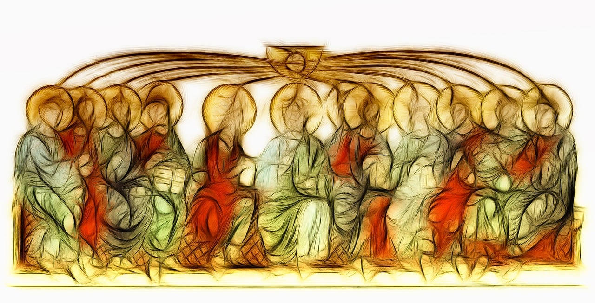

πᾶς ὁ πιστεύων
Whosoever
Free Grace Theology & Biblical Studies
Faith Alone

Holy Spirit's Role in Salvation
Examining the Holy Spirit in securing eternal life
→
There is a God (Book Review)
My thoughts on Flew's testimony converting to diesm
→
House, Throne & Kingdom
Davidic Covenant summarized
→New Covenant Promise to Israel
Overview of Jeremiah 31
→Synthetic Outline of Daniel
The Book of Daniel Overviewed
→
The Kingdom in Isaiah
Tracing the Kingdom through Isaiah
→
The Calling of Romans 10:9
An examination of Romans 10:9–10 in context
→The Faithful Saying in Context
Examination of 2 Timothy 2:11–13 as a chiasm
→